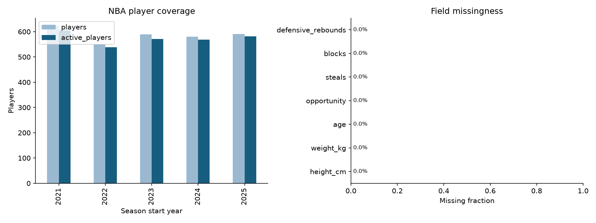
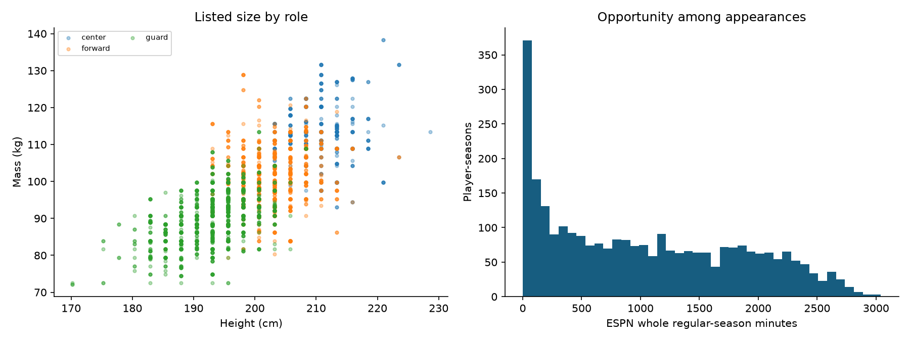
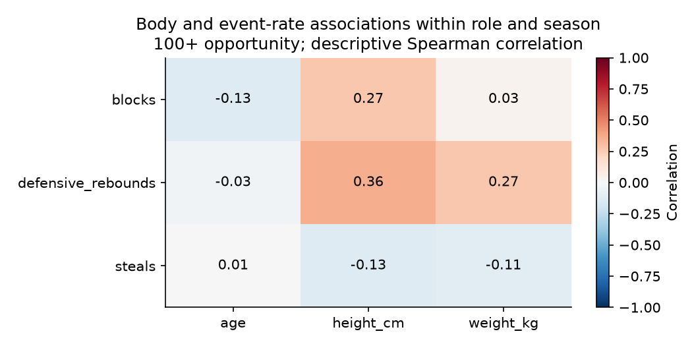

2,932 player-season rows · 1,057 athletes · [2021, 2022, 2023, 2024, 2025]
Role-specific event evidence, data coverage and uncertainty govern interpretation. Physical role similarity does not establish cross-sport success.



2024 selects the model; 2025 evaluates it. Forecasts exclude current physical listings. Baselines are retained when they perform better on validation.
| task | target | fold | model | selected_on_validation | n | brier | average_precision | mae | rmse | spearman | r2 |
|---|---|---|---|---|---|---|---|---|---|---|---|
| availability | any_opportunity | validation | prevalence | False | 589 | 0.178 | 0.769 | NaN | NaN | NaN | NaN |
| availability | any_opportunity | validation | logistic | True | 589 | 0.128 | 0.956 | NaN | NaN | NaN | NaN |
| availability | any_opportunity | test | prevalence | False | 580 | 0.161 | 0.802 | NaN | NaN | NaN | NaN |
| availability | any_opportunity | test | logistic | True | 580 | 0.123 | 0.951 | NaN | NaN | NaN | NaN |
| opportunity | opportunity | validation | persistence | True | 589 | NaN | NaN | 410.326 | 558.289 | 0.779 | 0.573 |
| opportunity | opportunity | validation | hurdle_ridge | False | 589 | NaN | NaN | 441.569 | 583.053 | 0.778 | 0.534 |
| opportunity | opportunity | test | persistence | True | 580 | NaN | NaN | 488.164 | 669.737 | 0.678 | 0.326 |
| opportunity | opportunity | test | hurdle_ridge | False | 580 | NaN | NaN | 471.848 | 614.635 | 0.698 | 0.432 |
| effectiveness_rate | steals | validation | role_mean | False | 453 | NaN | NaN | 1.122 | 1.739 | 0.243 | -0.006 |
| effectiveness_rate | steals | validation | persistence | False | 453 | NaN | NaN | 1.131 | 1.871 | 0.506 | -0.164 |
| effectiveness_rate | steals | validation | ridge | True | 453 | NaN | NaN | 1.105 | 1.774 | 0.480 | -0.047 |
| effectiveness_rate | steals | test | role_mean | False | 465 | NaN | NaN | 1.177 | 1.730 | 0.225 | 0.023 |
| effectiveness_rate | steals | test | persistence | False | 465 | NaN | NaN | 1.110 | 1.758 | 0.508 | -0.008 |
| effectiveness_rate | steals | test | ridge | True | 465 | NaN | NaN | 1.046 | 1.577 | 0.495 | 0.188 |
| total_contribution_count | steals | test | selected_rate_x_expected_opportunity | NaN | 580 | NaN | NaN | 18.172 | 25.788 | 0.644 | 0.329 |
| total_contribution_count | steals | test | prior_count | NaN | 580 | NaN | NaN | 18.316 | 25.942 | 0.663 | 0.321 |
| effectiveness_rate | blocks | validation | role_mean | False | 453 | NaN | NaN | 1.028 | 1.453 | 0.518 | 0.307 |
| effectiveness_rate | blocks | validation | persistence | True | 453 | NaN | NaN | 0.743 | 1.124 | 0.732 | 0.585 |
| effectiveness_rate | blocks | validation | ridge | False | 453 | NaN | NaN | 0.774 | 1.121 | 0.673 | 0.587 |
| effectiveness_rate | blocks | test | role_mean | False | 465 | NaN | NaN | 1.092 | 1.509 | 0.488 | 0.295 |
| effectiveness_rate | blocks | test | persistence | True | 465 | NaN | NaN | 0.838 | 1.345 | 0.652 | 0.440 |
| effectiveness_rate | blocks | test | ridge | False | 465 | NaN | NaN | 0.812 | 1.257 | 0.649 | 0.511 |
| total_contribution_count | blocks | test | selected_rate_x_expected_opportunity | NaN | 580 | NaN | NaN | 10.941 | 17.182 | 0.698 | 0.527 |
| total_contribution_count | blocks | test | prior_count | NaN | 580 | NaN | NaN | 10.941 | 17.182 | 0.699 | 0.527 |
| effectiveness_rate | defensive_rebounds | validation | role_mean | False | 453 | NaN | NaN | 3.362 | 4.476 | 0.609 | 0.383 |
| effectiveness_rate | defensive_rebounds | validation | persistence | False | 453 | NaN | NaN | 2.610 | 4.006 | 0.758 | 0.506 |
| effectiveness_rate | defensive_rebounds | validation | ridge | True | 453 | NaN | NaN | 2.403 | 3.533 | 0.782 | 0.616 |
| effectiveness_rate | defensive_rebounds | test | role_mean | False | 465 | NaN | NaN | 3.395 | 4.890 | 0.602 | 0.315 |
| effectiveness_rate | defensive_rebounds | test | persistence | False | 465 | NaN | NaN | 2.647 | 4.465 | 0.776 | 0.429 |
| effectiveness_rate | defensive_rebounds | test | ridge | True | 465 | NaN | NaN | 2.380 | 4.199 | 0.791 | 0.495 |
| total_contribution_count | defensive_rebounds | test | selected_rate_x_expected_opportunity | NaN | 580 | NaN | NaN | 64.382 | 92.776 | 0.720 | 0.475 |
| total_contribution_count | defensive_rebounds | test | prior_count | NaN | 580 | NaN | NaN | 67.083 | 96.958 | 0.717 | 0.426 |